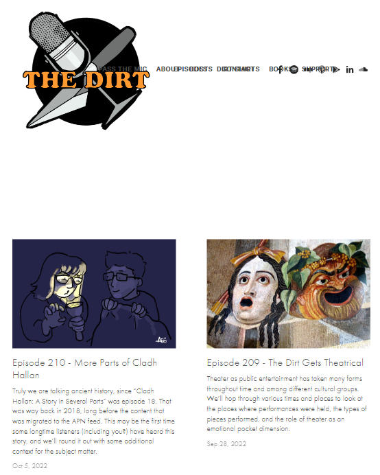

Analysis
This is a weekly story collection voice channel website. I chose this site because as a first-time user, I felt that the design of the navigation bar was not very friendly and did not support the screen response of the tablet, which made me feel that it needed to be improved.
Here is the screenshot of the website, and the link to Click Here.

Usability
- The site has very small navigation bar buttons, which are not user-friendly.
- The site has too much white space at the top, but the content sections are too close together, and the ratio is not suitable for usability.
- The site supports web and mobile browsing, but it doesn't support tablet or middle size, and the navigation bar buttons overlap.
- The site's image ratio is too large, with one image taking up about a quarter of the screen, and the content is too tightly packed for reading.
- The "Read More" button is not obvious and provides a picture and subtitle as hyperlinks which are too close, the conceptual model did not agree with learnablility.
Accessibility
- The "Read More" button is too low contrast for users to read.
- Also, the time and the text for the button are not obvious with the light grey.
- Redundant link: having three hyperlinks pointing to the same place in a single card is redundant and impractical, causing confusion and confusion to users.
- Some buttons do not use the aria tag to provide valid information to the user.